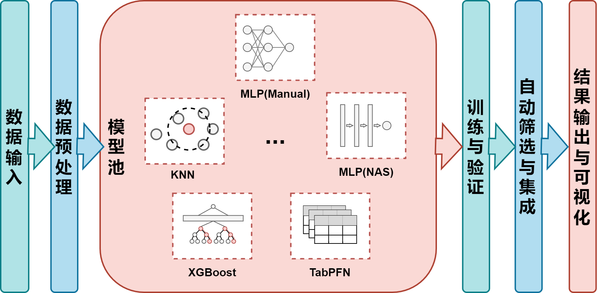
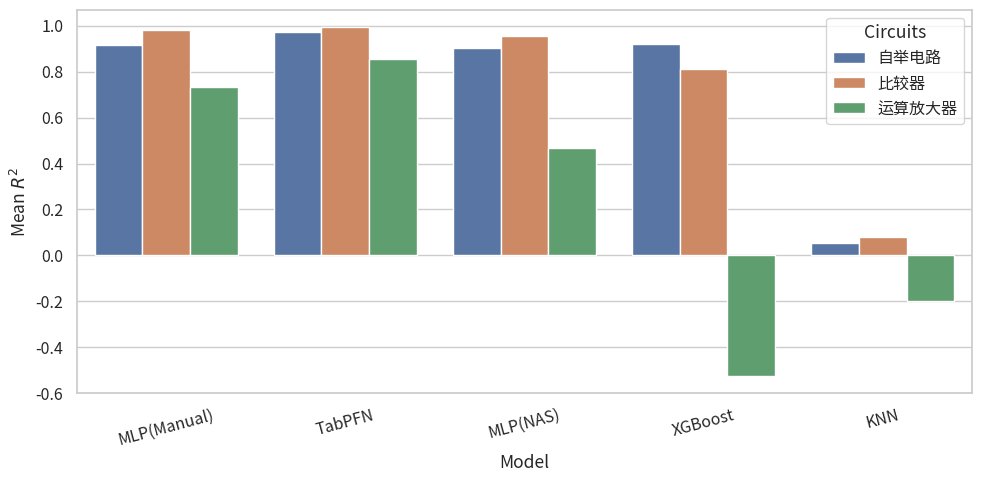
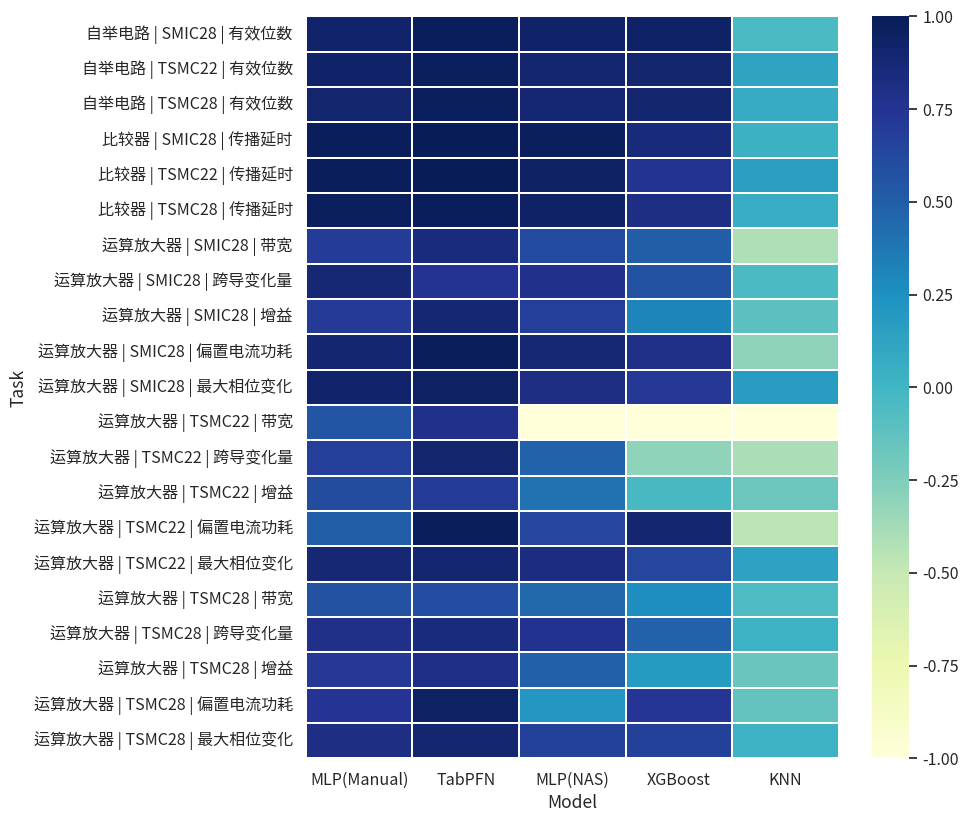

- Python
- PyTorch
- AutoGluon
- YAML
- pytest
- OOD detection
- Transfer learning
Context and my contribution
This undergraduate thesis grew from SAR-ADC modeling work during my research internship at the Ningbo Institute of Digital Twin / Eastern Institute of Technology (Jun. 2025–Aug. 2026). I built and extended a configurable Python workflow for training, evaluating, saving, and using surrogate models.
The study covers comparator, bootstrap, and op-amp tasks across TSMC28, TSMC22, and SMIC28 data. I integrated existing model libraries and implemented neural-network training and supporting workflow code.
From a task configuration to a prediction
- ConfigureYAML specifies inputs, targets, model, and data paths.
- PrepareSplit data, fit preprocessing, and retain transforms.
- Train & evaluateCompare models and inspect per-target errors.
- Save & inferReload models and preprocessing for predictions.
Engineering work
- Implemented PyTorch MLP and AutoGluon training paths with per-target evaluation and saved model artifacts.
- Added inference that reuses training-time preprocessing, plus prediction and error visualizations.
- Wrote pytest workflow checks for training, inference, and generated artifacts.
- Compared source-only, target-only, and mixed-data training for cross-process transfer.
Results and tradeoffs
| Circuit family | Average R² |
|---|---|
| Comparator | 0.9893 |
| Bootstrap | 0.9698 |
| Op-amp | 0.7854 |
Virtual-outlier training reached an OOD-detection AUC of 0.991. OOD detection improved over the EllipticEnvelope baseline, while ID accuracy decreased; total classification accuracy was unchanged at 0.9143. Real OOD validation data was used for model selection.
Cross-process experiments used 128 target training samples. Mixing source and target data helped correct transfer bias, but the preferred training method varied by output metric.
These are offline modeling and reliability experiments. End-to-end savings in SPICE calls and closed-loop sizing time remain future evaluation work.
Related research
I also co-authored SP-BO, on simulation pruning for analog sizing (accepted at ISEDA), and AMSchem, on automated netlist-to-schematic generation (under review at AAAI 2027). These are separate collaborative works.





